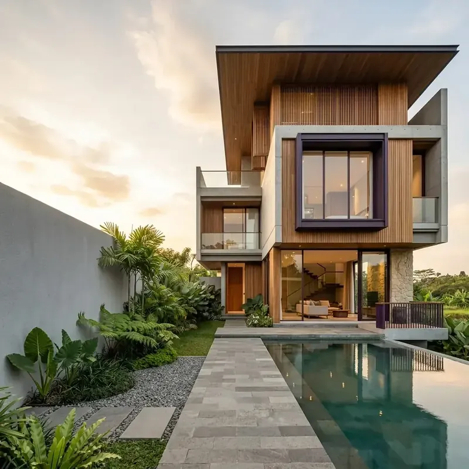
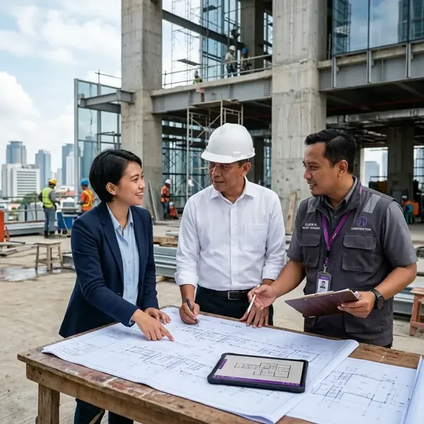
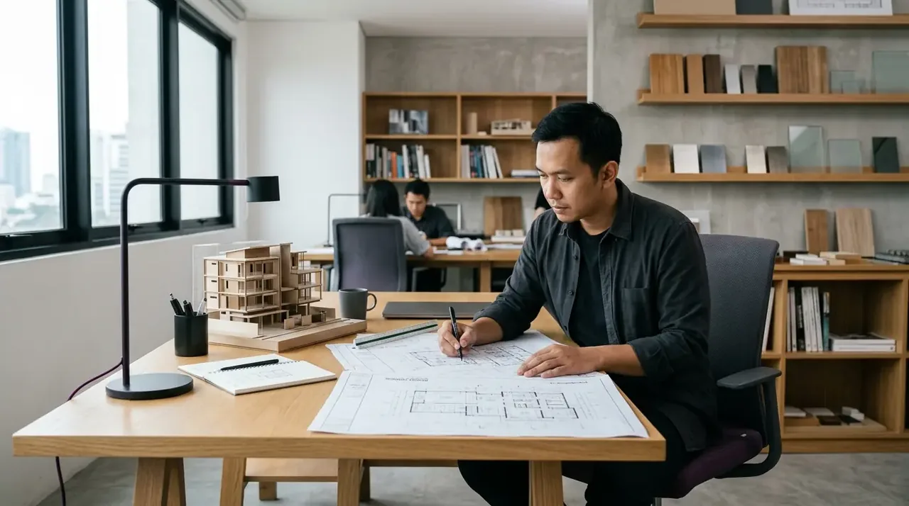
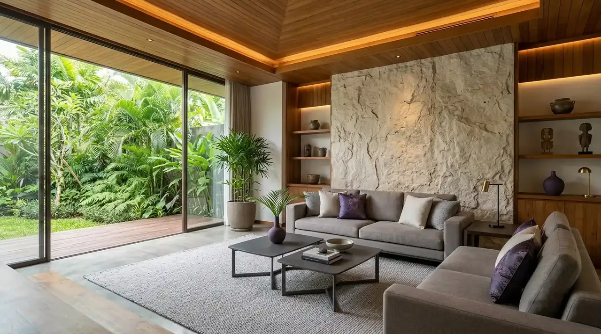
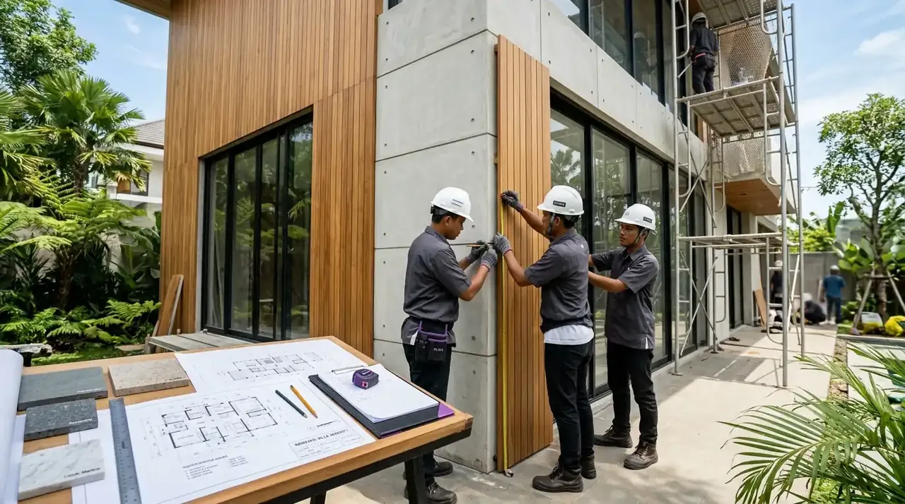
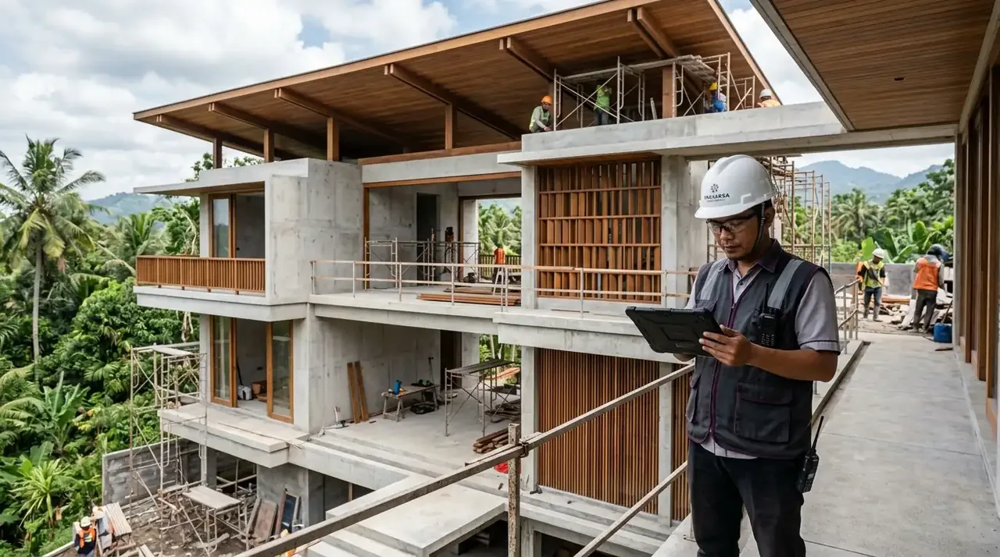

Jasa Kontraktor Bangunan Profesional
Jasa Kontraktor Bangunan Terpercaya untuk Rumah & Komersial
Solusi jasa kontraktor bangunan terlengkap untuk pembangunan rumah, renovasi, serta desain arsitektur & interior. Hasil berkualitas, proses transparan, dan bergaransi.


Tentang Kami
Solusi Konstruksi Terpercaya & Bergaransi
Setiap proyek memiliki kebutuhan, karakter, dan tantangan yang berbeda. Karena itu, kami mengutamakan proses kerja yang terencana sejak tahap konsultasi, perencanaan, penganggaran, hingga pelaksanaan dan serah terima proyek.
Dengan dukungan tim profesional dan pendekatan kerja yang terstruktur, kami membantu klien mewujudkan bangunan yang tidak hanya memiliki nilai visual, tetapi juga memperhatikan fungsi, kualitas, keamanan, dan kebutuhan jangka panjang.
Tentang Perusahaan KamiKenapa Kami
Mengapa Memilih Kami sebagai Kontraktor Anda?
Perencanaan Terstruktur
Perencanaan matang dan alur kerja terukur sejak konsultasi awal.
Tim Profesional
Tenaga ahli berpengalaman dan tersertifikasi di bidangnya.
Transparansi Biaya
RAB dan spesifikasi material dikomunikasikan secara terbuka.
Quality & Garansi
Pengawasan disiplin dan jaminan garansi mutu konstruksi.
Layanan Kami
Solusi Konstruksi untuk Berbagai Kebutuhan
Dari pembangunan rumah hingga proyek bangunan komersial, kami menyediakan layanan konstruksi dan desain yang dapat disesuaikan dengan kebutuhan setiap proyek.
 Konstruksi Utama
Konstruksi Utama
Jasa Kontraktor Rumah
Layanan pembangunan rumah dari tahap persiapan hingga penyelesaian dengan proses kerja yang terencana dan pengawasan terukur.
 Komersial
Komersial
Jasa Kontraktor Bangunan
Solusi konstruksi untuk berbagai kebutuhan bangunan, mulai dari gedung, kantor, ruko hingga bangunan komersial.

PerencanaanJasa Arsitek
Layanan desain arsitektur untuk menghasilkan bangunan yang memiliki fungsi, karakter visual, dan perencanaan ruang presisi.

InteriorJasa Desain Interior
Menciptakan ruang interior yang nyaman, fungsional, estetis, dan sesuai karakter pengguna.

RenovasiJasa Renovasi
Membantu memperbarui, memperbaiki, dan meningkatkan fungsi serta tampilan bangunan melalui perencanaan renovasi terukur.

ManajemenJasa Pengawasan & Manajemen Konstruksi
Pengawasan mutu pekerjaan, kontrol efisiensi anggaran, dan manajemen proyek untuk memastikan konstruksi tepat waktu dan tepat spesifikasi.
Portofolio
Portofolio Proyek Terbaru
Hasil karya pembangunan rumah, gedung komersial, arsitektur, interior, dan renovasi dengan standar kualitas tinggi.

Testimoni Klien
Kepercayaan Klien adalah Kebanggaan Kami
Pengalaman dan kepuasan nyata dari klien yang telah mempercayakan proyek pembangunan rumah, bangunan komersial, dan renovasi bersama kami.
“Proses pembangunan rumah berjalan sangat jelas dari awal. Tim selalu berkala memberikan update perkembangan di lapangan sehingga kami merasa sangat tenang.”
“Komunikasi mengenai anggaran RAB dan spesifikasi bahan material sangat terbuka. Tidak ada biaya tersembunyi dan hasil pengerjaan sangat rapi.”
“Tim desain interior dan arsitek paham betul keinginan kami. Tata ruang kantor jadi sangat efisien, modern, dan nyaman untuk seluruh karyawan.”
FAQ
Pertanyaan yang Sering Diajukan
Temukan jawaban atas pertanyaan umum seputar jasa kontraktor, estimasi biaya, dan area layanan kami.
Mulai Proyek Anda
Punya Rencana Membangun atau Merenovasi?
Ceritakan kebutuhan proyek Anda kepada kami. Tim kami siap membantu memahami kebutuhan, ruang lingkup, dan tahapan proyek Anda.